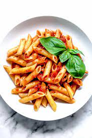

FOOD GALLERY

SOUP
Soup is a primarily liquid food, generally served warm or hot (but may be cool or cold), that is made by
combining ingredients of meat or vegetables with stock, milk, or water. Hot soups are additionally
characterized by boiling solid ingredients in liquids in a pot until the flavors are extracted, forming a
broth. Soups are similar to stews, and in some cases there may not be a clear distinction between the two;
however, soups generally have more liquid (broth) than stews.

BURGER
The term burger can also be applied to the meat patty on its own, especially in the United Kingdom, where the
term patty is rarely used, or the term can even refer simply to ground beef. Since the term hamburger
usually implies beef, for clarity burger may be prefixed with the type of meat or meat substitute used, as
in beef burger, turkey burger, bison burger, portobello burger, or veggie burger. In Australia and New
Zealand, a piece of chicken breast on a bun is known as a chicken burger, which would generally not be
considered to be a burger in the United States

PASTA
Both dried and fresh pastas come in a number of shapes and varieties, with 310 specific forms known by over
1,300 documented names.[4] In Italy, the names of specific pasta shapes or types often vary by locale. For
example, the pasta form cavatelli is known by 28 different names depending upon the town and region. Common
forms of pasta include long and short shapes, tubes, flat shapes or sheets, miniature shapes for soup, those
meant to be filled or stuffed, and specialty or decorative shapes.

PIZZA
The term pizza was first recorded in the 10th century in a Latin manuscript from the Southern Italian town
of Gaeta in Lazio, on the border with Campania.[4] Modern pizza was invented in Naples, and the dish and its
variants have since become popular in many countries.[5] It has become one of the most popular foods in the
world and a common fast food item in Europe, North America and Australasia;IZZA